Soho
London’s liveliest neighborhood. Check out Chinatown, Oxford Street (shopping central), Outernet - which is an immersive interactive experience, or watch a show or performance.

After living in London for 4 months, I still did not get to see or do everything that I wanted to. The city offers so many opportunities, from historic site seeing, to food, to shopping, to museums and centers, to random neighborhoods. Chances are, wherever you go in London, you’ll run into each of these things regardless of where you are. For the popular ones, and some hidden gems, the information you need is down below.
London’s liveliest neighborhood. Check out Chinatown, Oxford Street (shopping central), Outernet - which is an immersive interactive experience, or watch a show or performance.
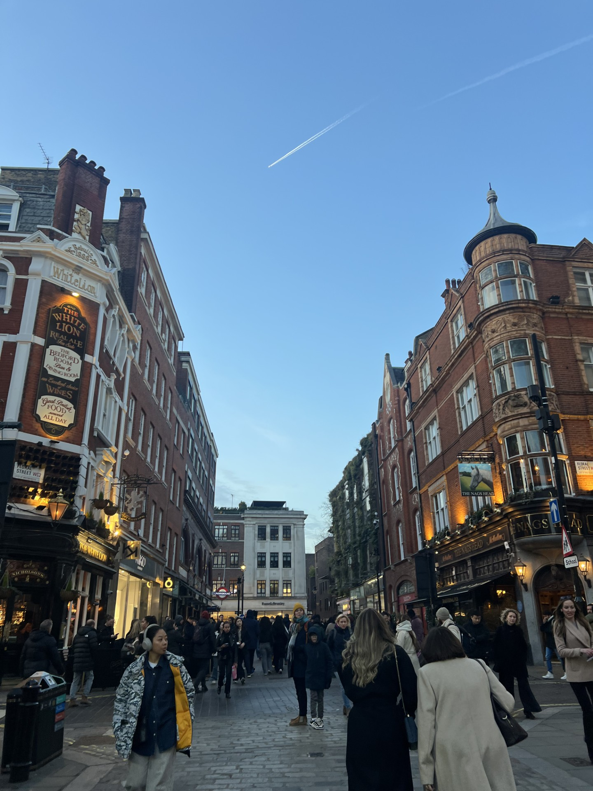
A popular area known for shopping, street performers, and market halls. In the lively area, you’ll find boutiques, cafes, mom and pop shops, live music, and more.
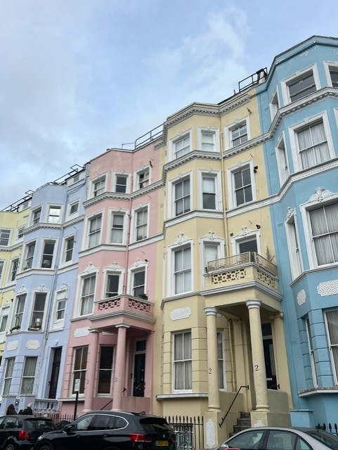
A charming but busy neighborhood recognized by its pastel houses and lovely architecture. Portobello Road Market is its busiest and most known aspect, featuring a variety of antique and handmade goods and stores.
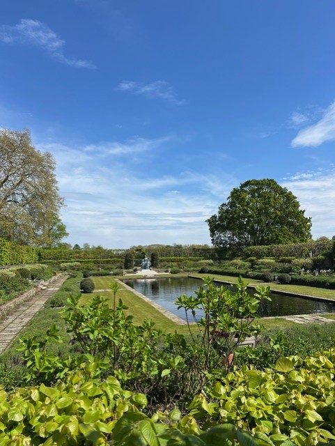
An upscale area known for elegant streets, museums, and green spaces. It’s home to Kensington Palace, Hyde Park, and several major cultural institutions.
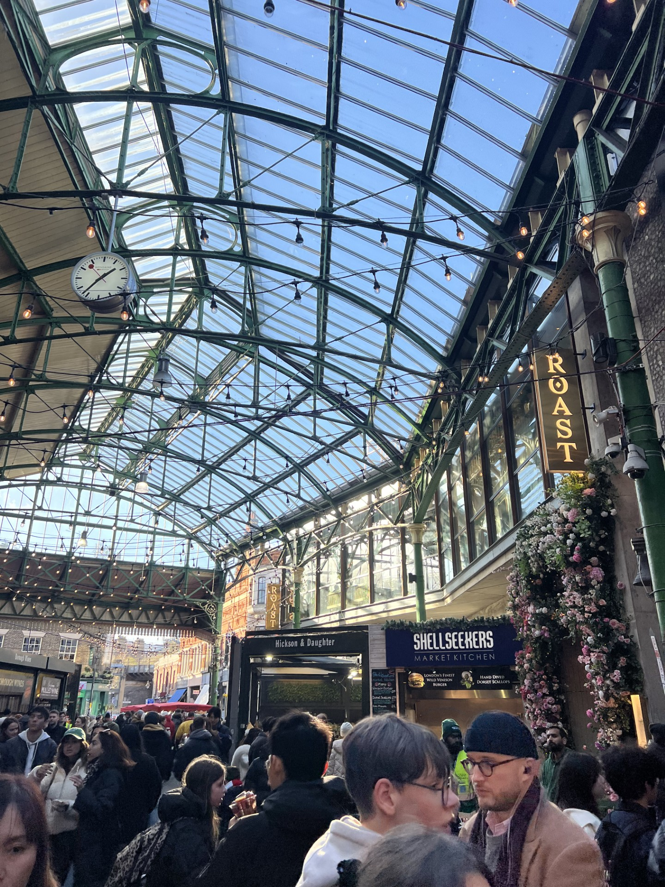
One of London’s most famous food markets and an absolute must-visit. Expect amazing street food, fresh ingredients, and local specialties. Borough market favorites can be found on the Must Eat page!
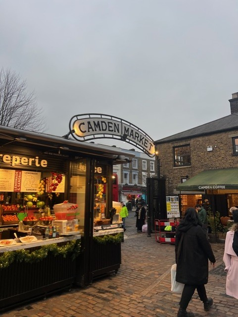
Camden has a lively, edgy atmosphere and is great for checking out food and vendors. Another busy area that includes a variety of stores, street food, and handmade goods. Camden food favorites can be found on the Must Eat page!
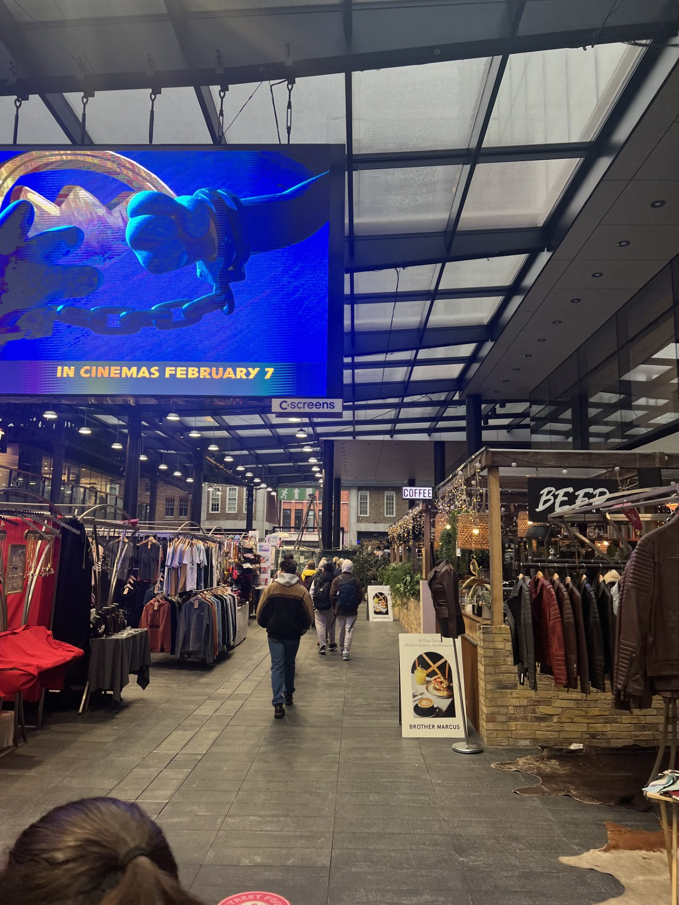
A historic market area blending old and new, with independent shops, fashion stalls, and food vendors. It’s a great spot for shopping, eating, and exploring East London.
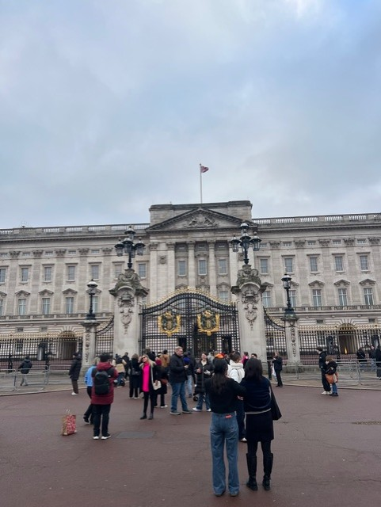
The official home of the British monarch. Many visitors go to the iconic landmark to view the changing of the guard.
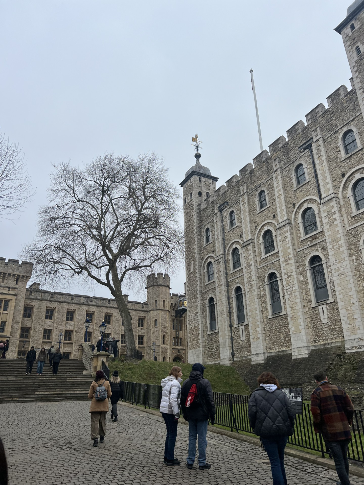
A historic building that has served as a royal palace, prison, and treasury. It’s home to the Crown Jewels and offers deep insight into British history. Explore the tower on your own, or with a tour guide!
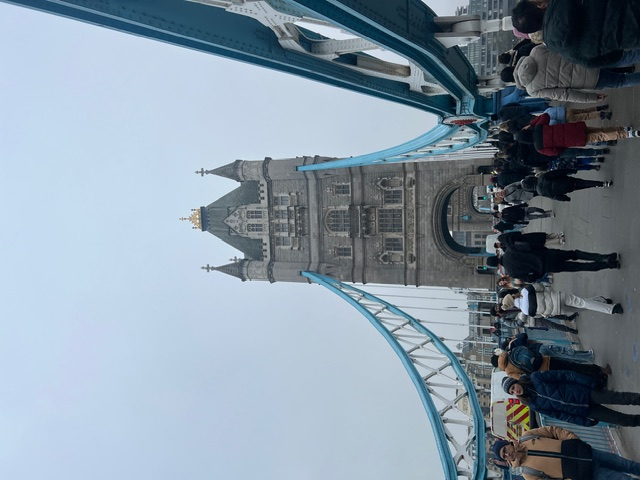
One of London’s most recognizable landmarks. Visitors can walk across the high-level glass floors and enjoy views of the Thames. Sometimes confused as ‘London Bridge’, since it is immensely more decorated and eye-catching than the real London Bridge.
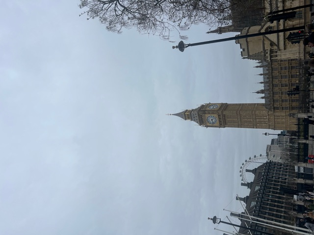
The famous clock tower at the Palace of Westminster and one of London’s most iconic symbols. It is located in an area of history and more sites, including Westminster abbey, Parliament Square, and the River Thames.
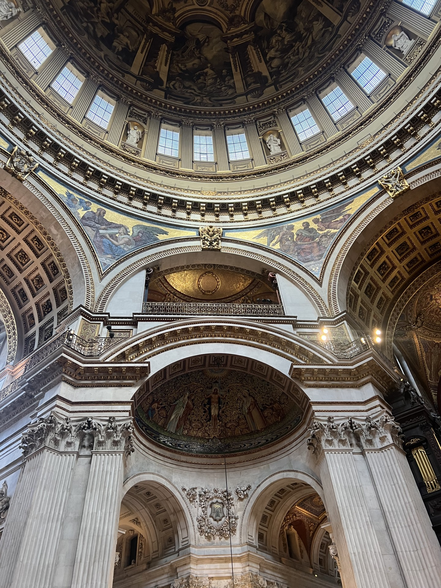
Known for its massive dome and stunning architecture. An amazing building to visit and offers panoramic views of the city from the top.
Probably the most famous London museum. A lot of world history is built into this museum.
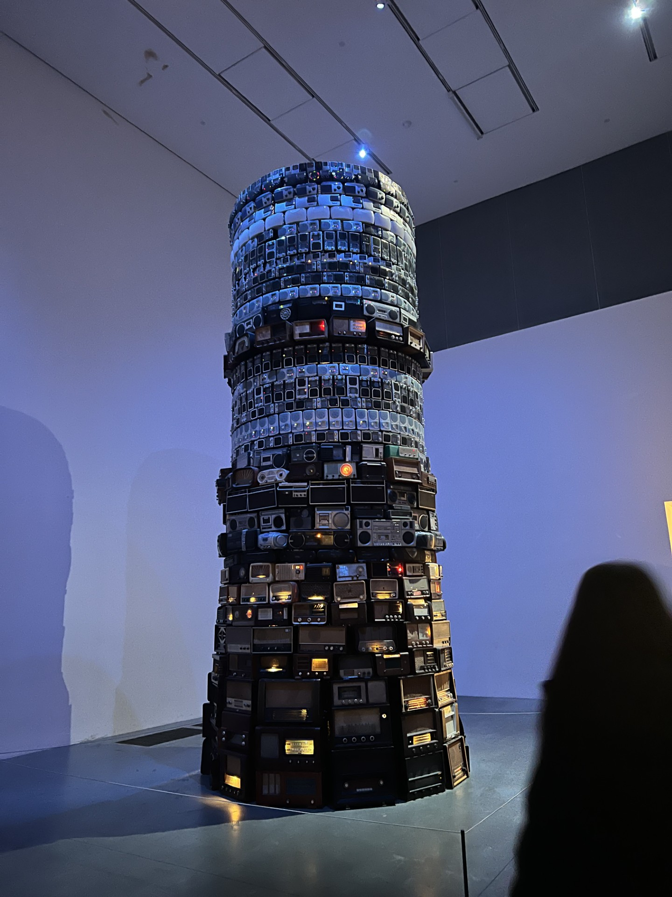
A very famous modern and contemporary museum. Features many exhibits.
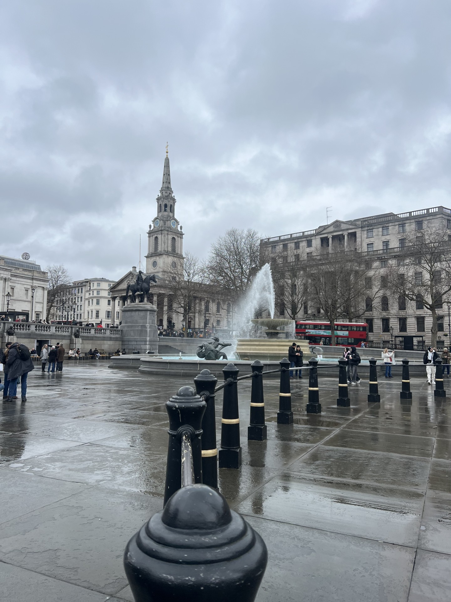
Located in Trafalgar Square, featuring world renowned classic European paintings.
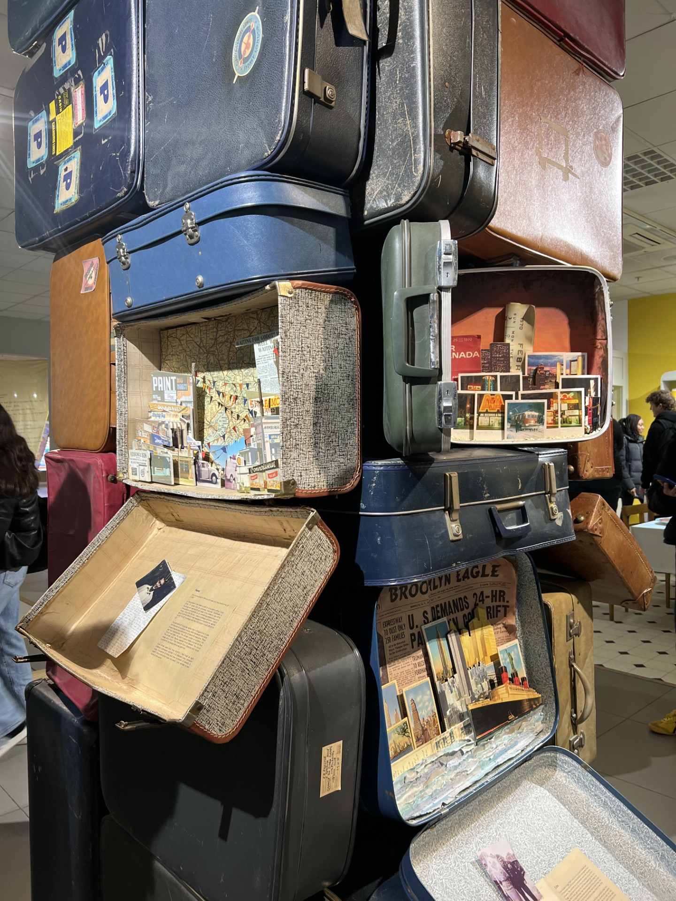
A museum dedicated to telling the story of migration to the UK. It explores how migration has shaped British culture, identity, and everyday life.